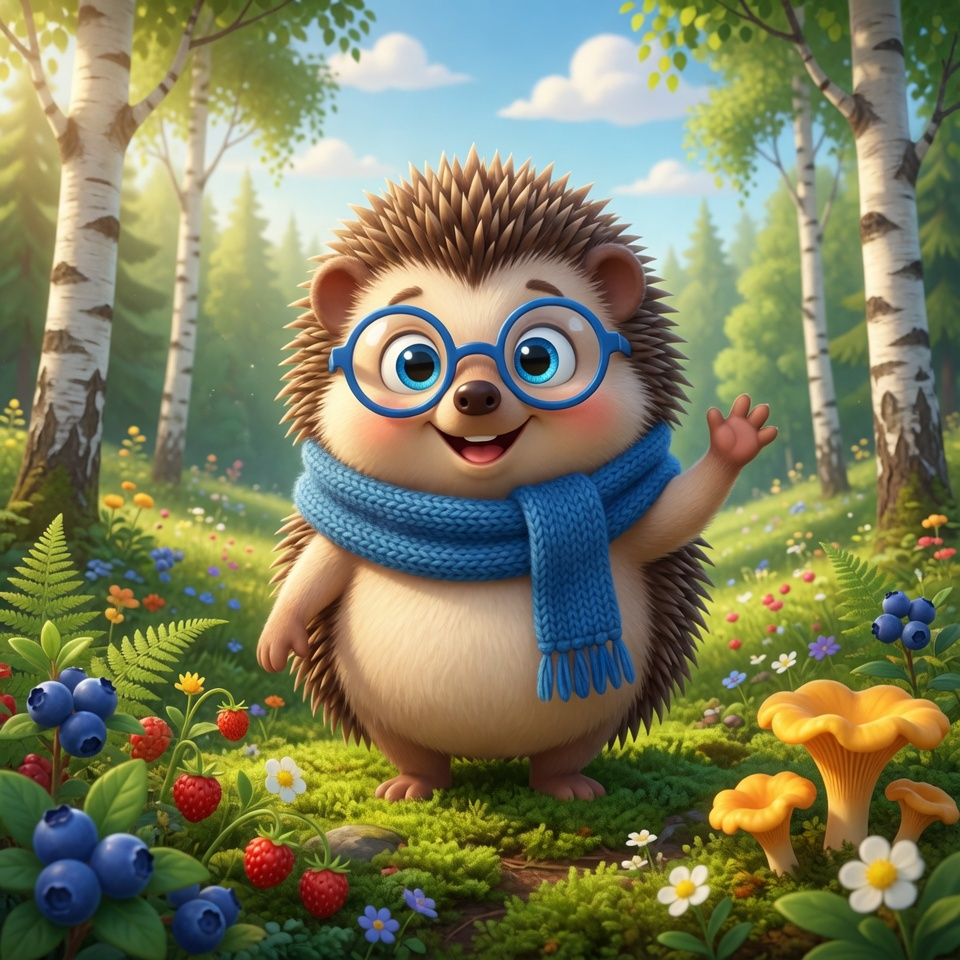
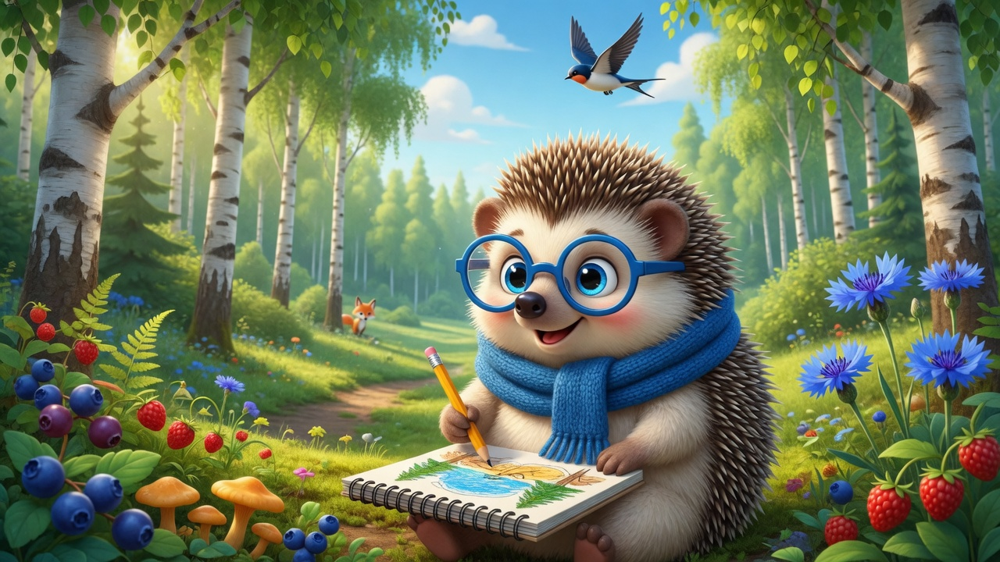
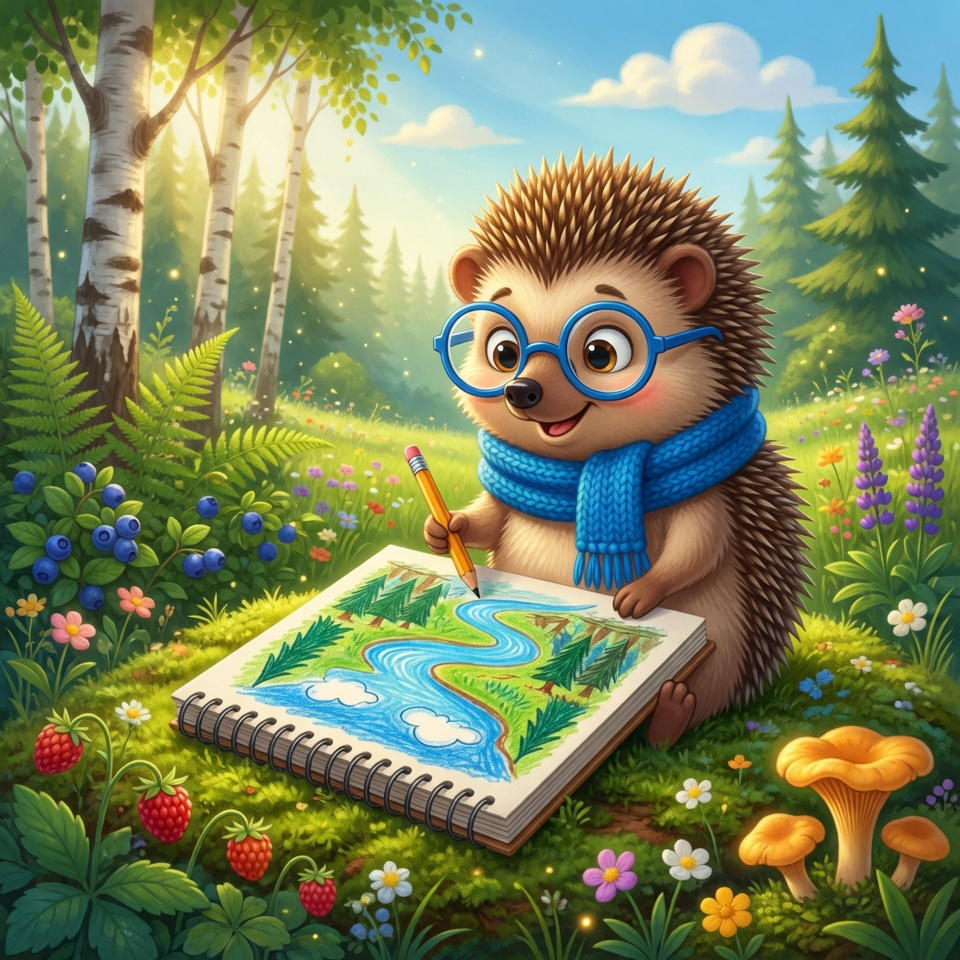
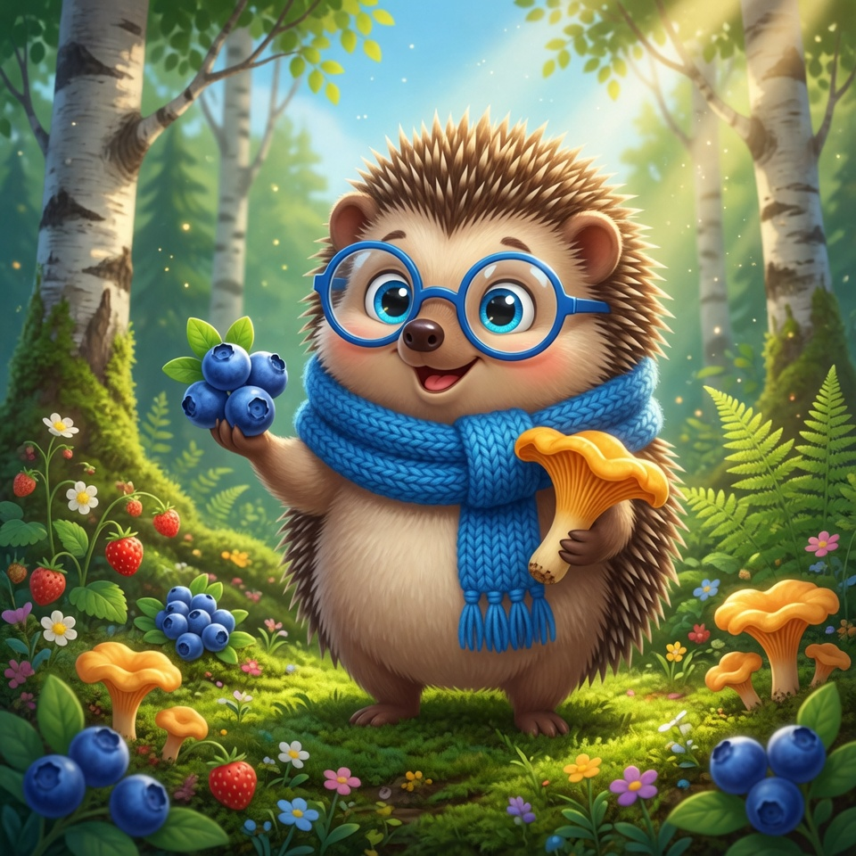
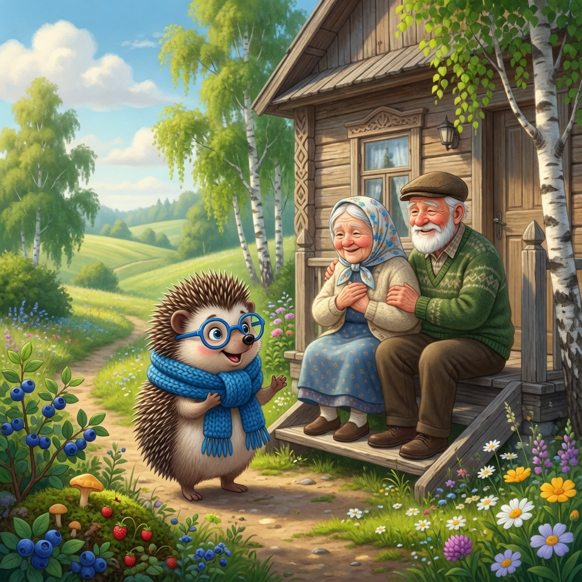
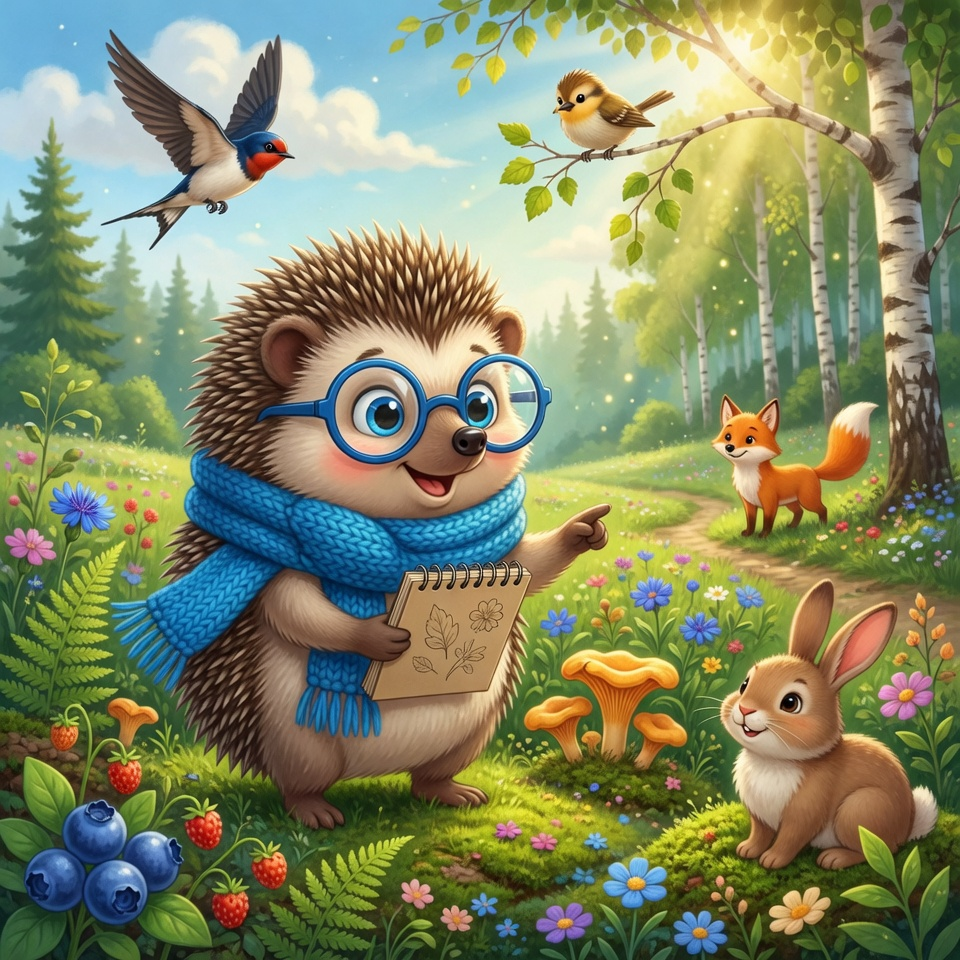
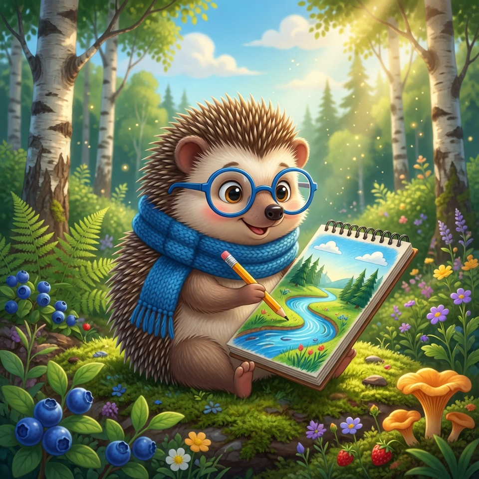

01
Timpsu tervitab
Väike siil kutsub lapse rõõmsalt Eesti maailma avastama.

Väike Eesti maailm lapse taskus
Eesti keel, juured ja Eesti tunne välismaal kasvavale Eesti lapsele.
Laps avastab metsa, marju, loomi, lugusid ja sugulasi. Eesti sõnad tulevad kaasa.
Mitte töövihik. Päris seiklus.
Timpsu seob eesti keele sellega, mis last päriselt köidab: mets, mustikad, kukeseened, loomad, joonistamine, lood ning vanaema ja vanaisa.

Väike siil kutsub lapse rõõmsalt Eesti maailma avastama.

Mets, jõgi ja puud saavad pildiks — sõnad tulevad loomulikult kaasa.

Mustikad, kukeseened ja sammal muudavad Eesti lapse jaoks päriseks.

Lihtsad laused ja häälsõnumid aitavad hoida sidet sugulastega Eestis.

Pääsuke, rebane, jänes ja metsarada teevad õppimisest avastusretke.

Muinasjutud ja Kodu-Eesti lood annavad põhjuse ikka tagasi tulla.
Kolm lihtsat sammu
Timpsu ei sunni last õppima. Ta kutsub lapse rääkima.
Päris inimhääl, lihtsad sõnad ja laused. Lugemisoskust pole vaja.
Laps kordab, kuuleb ennast ja saab kohe väikese õnnestumise tunde.
Eestikeelne tervitus jõuab häälsõnumina vanaema, vanaisa või sugulaseni.
Vanemale rahulik. Lapsele põnev.
Timpsu otsib esimesi peresid
Liitu testperega. Saad esimeste seas proovida ning aidata kujundada Timpsut selliseks, mida välismaal kasvav Eesti laps päriselt armastab.
Liitun testperega Testvormi täidab lapsevanem. Laste andmeid me ei kogu.